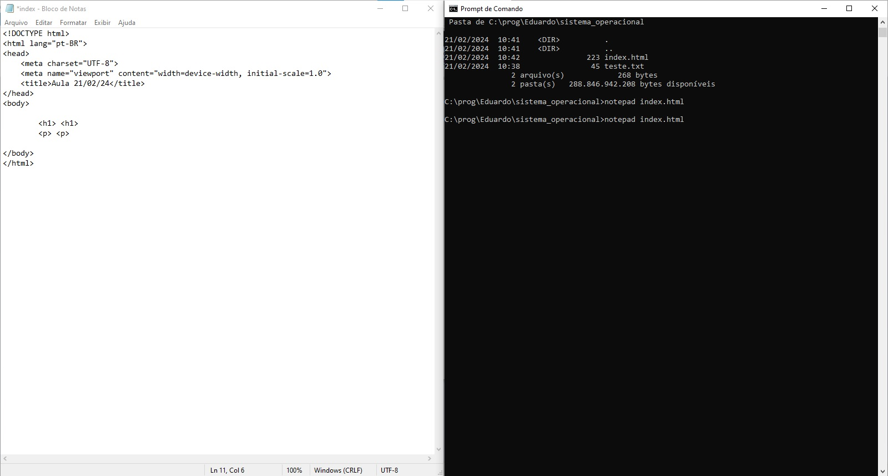

sistema operacional é um programa ou um conjunto de programas cuja função é gerenciar os recursos do sistema (definir qual programa recebe atenção do processador, gerenciar memória, criar um sistema de arquivos, etc.), fornecendo uma interface entre o computador e o usuário

Exemplo de comandos do sistema operacional
